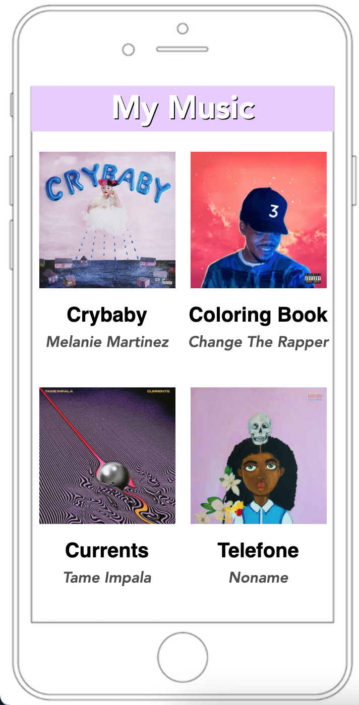
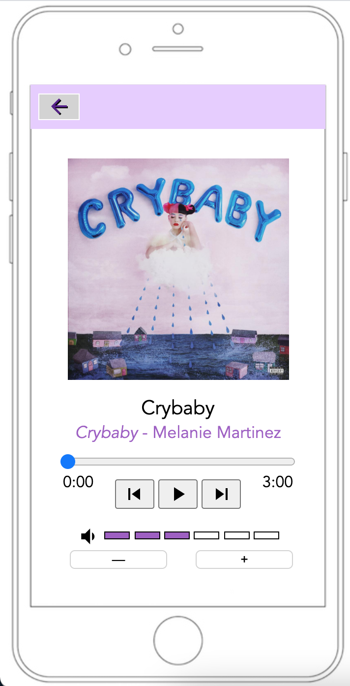

The Wireframe Prototype outlines a potential implementation of a digital library and the potential functionalities it could possess.
Some of the potential functionalities a user has are adding and removing books from their different libraries and also being able to select books from an in-application book selection that is constantly updated.
The home page is where users can scroll through new books to add to their libraries.
Users can select a book, read a description, and decide to add it to their library.
The iPod Project uses HTML and JavaScript to create a functional iPod.
 The user can select an album (image 1), which directs them to a song list. From there, they can select a song for the iPod to play.
Once they select a song, the iPod will play the song (image 2).